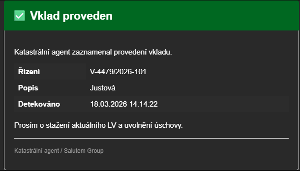
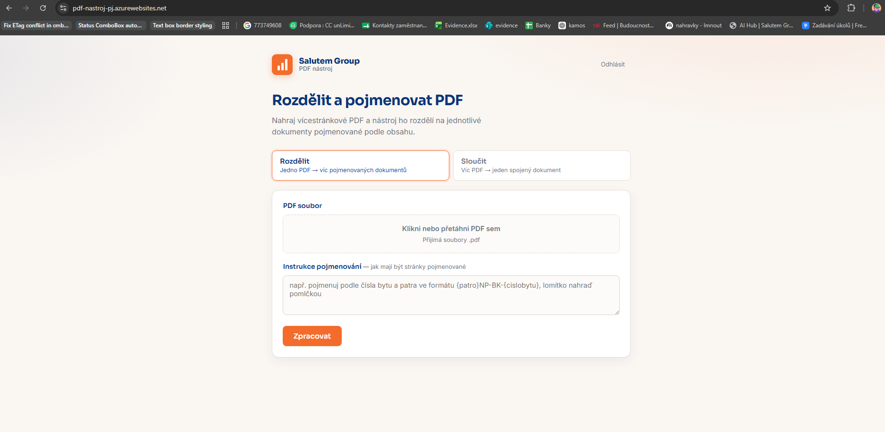

Objem práce už manuální procesy neudrží.
Chceme růst i nadále. Proto neřešíme jednorázový projekt, ale zavádíme trvalou interní službu — AI Adopci — která firmě průběžně pomáhá zvládat víc práce na stávající kapacitě.
Interní služba, která má firmě pomoci používat AI opravdu v praxi. Cílem je provést lidi změnou tak, aby AI začala přirozeně patřit do jejich každodenní práce.
Služba má tři větve. Produkce přináší hodnotu, vzdělávání zajišťuje, že ji lidé využijí, compliance ji drží bezpečnou a legální. Není to seznam jednotlivých nástrojů — je to mapa toho, co služba pokrývá a kde se o každé části dozvíte víc.
nasazujeme AI
Vyrábíme a provozujeme AI automatizace a agenty, aby lidé zvládli víc práce na stávající kapacitě.
rozvíjíme lidi
Měníme návyky a budujeme AI gramotnost, aby lidé uměli AI bezpečně a prakticky používat. Zákonná povinnost podle AI Actu, čl. 4.
bezpečně a legálně
Držíme AI v bezpečných mantinelech — aby firma věděla, jakou AI používá, jaká nese rizika a uměla to doložit.
Firma je na začátku digitalizace. Cílem teď není celá vize, ale první realistický krok. Zaměřujeme se na JEDEN pilotní tým — obchod — a měříme dopad.
Roční výnos ~1,2 mil. Kč (3 byty ročně navíc × marže ~800 tis. × 50 % pravděpodobnost) + JEDNORÁZOVĚ ušetřený placený externí člověk z Raynetu. Investice 0. Skóre 600. Sloučeno s dřívějším T13.
Interní onboarding aplikace automatizuje předávání požadavků mezi HR a IT při nástupu zaměstnance, snižuje chybovost a zajišťuje jednotný, dohledatelný onboarding proces.
Benefit ~40 tis. Kč/rok (~80 h). Investice 0 Kč (Power Apps). Vzor hotového pilotu — automatizace onboardingu v Power Apps. Šetří ~80 h/rok napříč HR/IT.
Analýza trhu z veřejných inzerátů · ~145 tis. Kč benefit/rok (dohromady). Naplánovaný prompt pro dlouhodobé pronájmy v Ústí a Hodoníně funguje, feedback pozitivní. Krátkodobé pronájmy — první testovací řešení, čekáme na feedback.
Manuální kontrola katastru u 50+ nemovitostí je pomalá (zpoždění 2–5 dní), což brzdí uvolnění peněz z úschov. AI agent monitoruje KN 24/7 přes API; při zápisu vkladu okamžitě notifikuje finance a stahuje LV. Nyní testujeme na prvních vkladech.

Agent (spíš AI na webu) skriptuje na základě slovního zadání a upravuje přiložené PDF. Máme připravené řešení k testování.

Připravené, otestované, kontrolujeme nyní každý týden správnost čísel s ručními reporty koordinátorů. Čísla nám sedí. Blížíme se reálnému využití.
Jeden doklad s jedním součtem, který se má rozpustit na víc firem/středisek podle nějakého klíče a přefakturovat po položkách. Připraveno řešení, testujeme s Helenou Hroudovou.
Z přepisu hovoru AI navrhne e-mail i nabídku. ~30 obchodníků. Benefit ~960 tis. Kč/rok (konzervativně ~480 tis.), investice 30 tis., složitost 2, skóre 480 — nejvyšší z nových.
Fáze 1 (červen): e-mailové šablony. Fáze 2 (červenec): nabídka „na 2 kliky". Realizace: AI tým (Martina, Kuba). Rychlá dráha.
Skript spojí exporty z Pohody, Copilot v Excelu kategorizuje. Finance (Dvořák — dnes 12 h/týden na uzávěrkách). 280 tis. Kč/rok, investice 25 tis., návratnost ~1 měsíc, skóre 140 — nejlepší tvrdá ROI.
Hlasem nadiktovaný denní report → AI shrne do šablony → Teams. Ušetří ~5 h/týden, nízká složitost → rychlá dráha, můžeme dělat hned.
Benefit 125 000 Kč (odhad — 1 × 5 h/týden × 50 × 500 Kč, adopce 100 %) · investice 0 Kč (odhad).
Automatizovaná DB poskytovatelů financování ušetří ~16 h/týden.
Benefit 400 000 Kč (odhad — 1 × 16 h/týden × 50 × 500 Kč, adopce 100 %) · investice — zatím odhadujeme nula.
Potenciál ~800 tis. Kč/rok, ale chybí podklady → dopracovat zadání jako první kandidát další vlny.
Agent (OCR) dohledává data v právních dokumentech. Než cokoli stavět, ověřit, že to neřeší už Xeelo/PLA, a doplnit přínos.
Formulář sbírající podklady k obchodu → Raynet → případně smlouvy. Velký překryv s IT Generátorem — nejdřív vyjasnit, kdo co vlastní, a doplnit čísla.
Systém hlídá nové inzerce externích makléřů vydané bez odsouhlasení. Blokováno — bez jmen makléřů a názvů RK nejde ani první prompt.
Agent z historických faktur odhadne férovou cenu rekonstrukce a posoudí novou nabídku. Dává smysl, ale chybí vyčíslení přínosu i rozsah dat.
Rozšíření běžící (produkční) onboarding apky o offboarding. Nízká investice, nízká složitost → pravděpodobně rychlá dráha; chybí jen vyčíslení a rozsah kroků.
Když se v obchodní Teams skupině pošle @všichni, automaticky to přijde i do individuálních chatů obchodníků. Nízká složitost; chybí frekvence a počet lidí pro vyčíslení.
Rychlejší e-maily (400 tis.), Přehled z Teams (175 tis.), Z porady rovnou úkoly (90 tis.) = zapnout Copilot + zaškolit pilotní tým.
Není to stavba, je to změna návyků.
Každý use-case prochází všemi fázemi. Fáze Udržuj odlišuje službu od jednorázového projektu — nasazená věc se dál provozuje, měří a zlepšuje.
Živý přehled AI use-casů — co právě běží, co se povedlo a co to přináší.
Skutečný úspěch není v tom, že se něco technicky spustí. Úspěch nastává až tehdy, když to lidé začnou používat.
Načítám…
Načítám…
Kdo za co odpovídá a co služba garantuje
Aby měla AI Adopce smysl dlouhodobě, musí být nejen užitečná, ale také spolehlivá a bezpečná. Proto služba počítá s:
Kapacitně službu zajišťují dva lidé. Aby to bylo udržitelné, součástí modelu je i vlastní automatizovaný provoz — zejména příjem požadavků, jejich třídění a základní podpora.
Odhadovaná investice do služby je přibližně 1,8 mil. Kč. Očekávaný přínos je zhruba 2,5 mil. Kč ročně.
Mezi hlavní rizika patří roztříštěná data, omezená kapacita AI týmu a nízká adopce ze strany uživatelů. Úspěch služby závisí také na spolupráci s IT/Alfa, kvalitě dat a dostupnosti potřebných nástrojů.
Potřebujete vědět víc? Zde jsou všechny podklady.